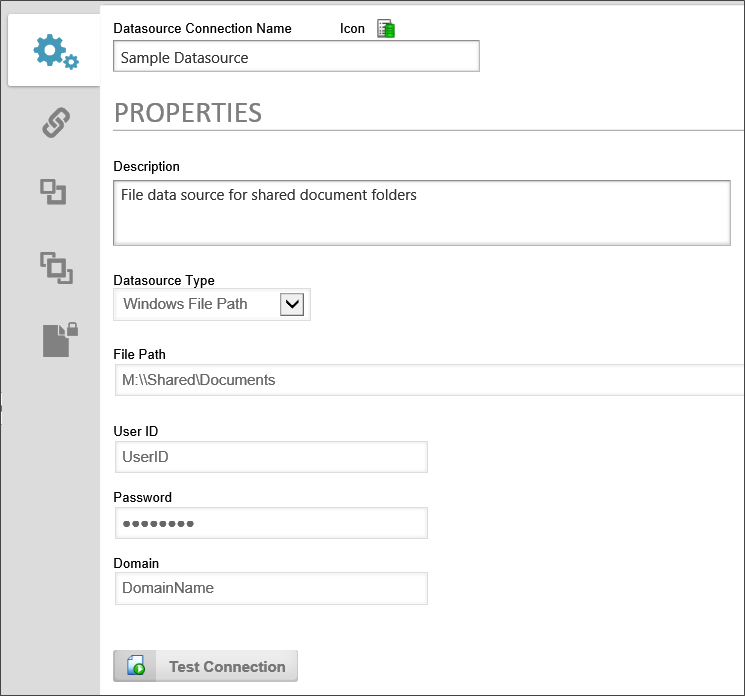
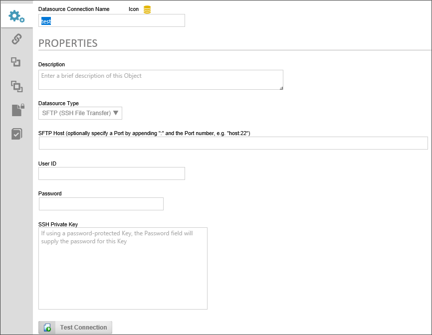

Process Director can connect to your network's file system using any accessible UNC. The primary purpose of this Datasource is to enable the use of some of the Content Actions Custom Tasks, specifically:
Each of these Content Actions Custom Tasks require a Windows File System Datasource to be configured prior to use.

To set up the datasource, you need select "Windows File Path" as the Datasource Type property. Once you do, new properties will appear to enable you to configure a valid Windows UserID, Password, and Domain name to configure the properties. The UserID and Password should be set to a user with adequate permissions to read/write files to the desired file paths in the domain.
For security reasons, the File Path property must correspond to a file path authorized in the Allowed Export Locations configured in the custom variables file. There are additional file path properties in the configuration screens for file-based custom tasks. This Custom Task file path should be a continuation of the File Path property specified in the Datasource. For instance, let's say the file Datasource is configured to use the File Path "C:\docs". If you want the Custom Task to export a file to "C:\docs\MyProcessDocs", then the File Path property in the custom task would be "\MyProcessDocs". The two File Path properties will be concatenated as "C:\docs\MyProcessDocs".
There are some additional considerations you should keep in mind.
In addition to the standard File System datasource, users of Process Director v5.12 and higher can use Secure FTP to access and transfer files as well. This datasource type will enable process director to access a remote file store via secure SSH file transfer.

The following properties must be configured for this type of datasource.
DataSource Type: SFTP (SSH File Transfer)
SFTP Host: The hostname of the secure FTP server where the files are located. You may optionally specify a port to use for FTP by appending it to the hostname after a colon, e.g., ":22".
UserID: The User ID of an FTP account that is authorized to access the FTP location.
Password: The password of the FTP account.
SSH Private Key: The hash string of the private key that must be used to access the data securely.